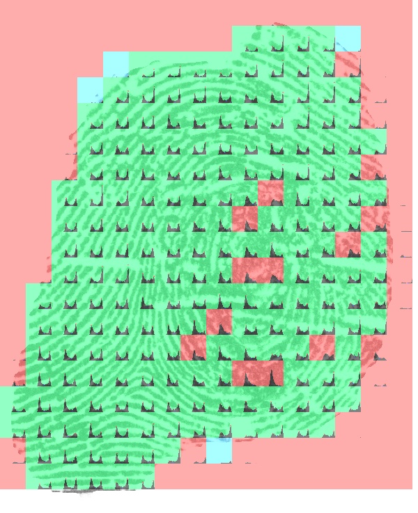
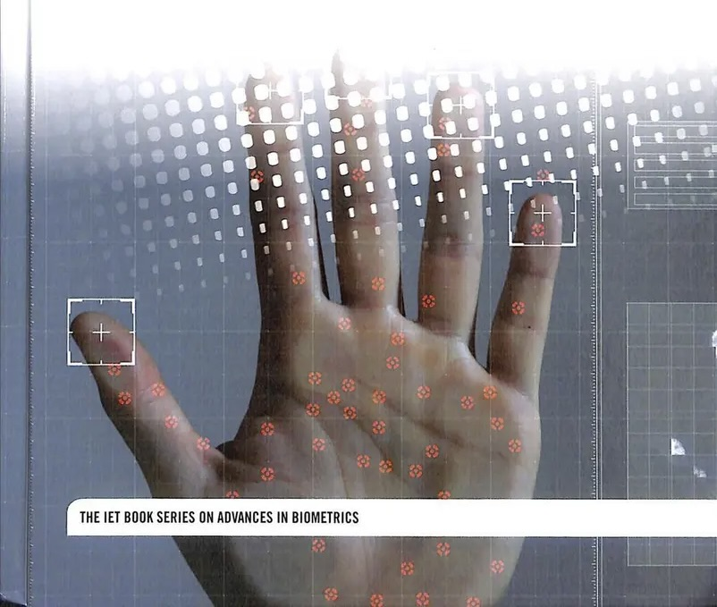
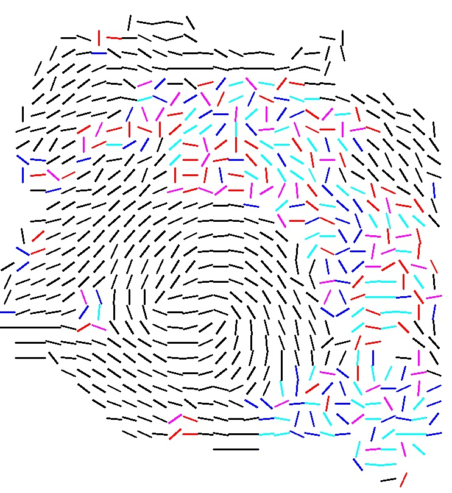
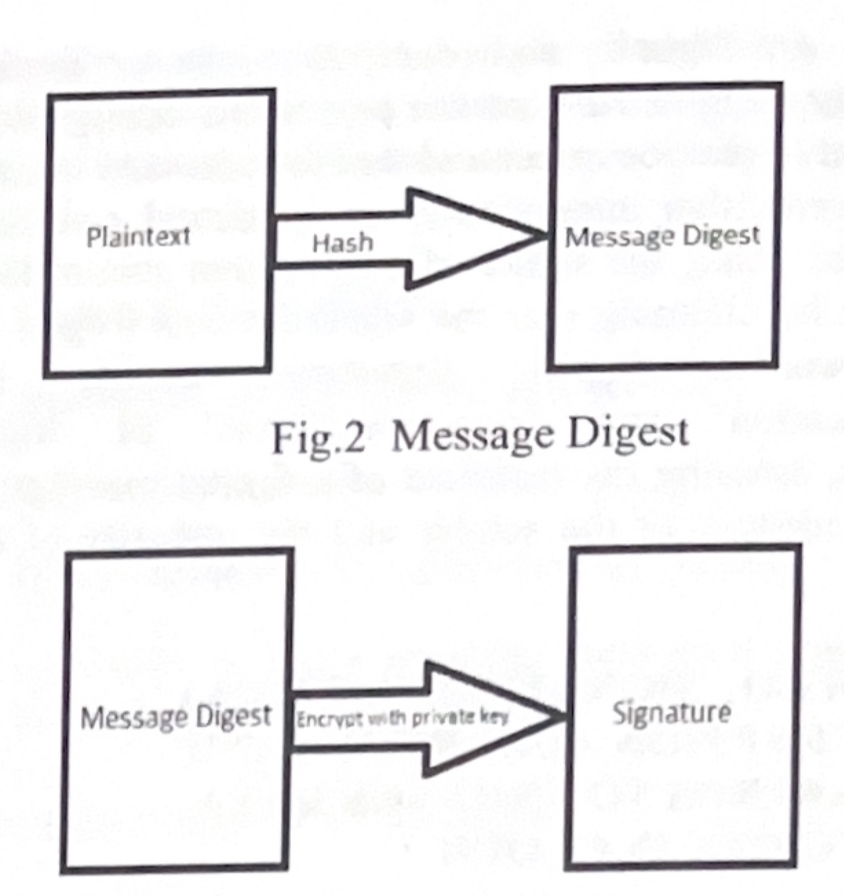

|
Mona Heidari
I'm a computer scientist, with expertise in the fields of computer vision, biometrics, healthAI, image processing, and machine learning. I'm currently focused on integrating LLMs with computer vision, aiming to discover innovative approaches for enhancing both domains.
Email /
CV /
Scholar /
Twitter /
Github
|
|
News
- November 2022: I will be presenting at Ansbach University, focusing on the generation of fingerprint images using (GAN).
- Janunary 2022: I am invited to give a talk about my work 'Disease Detection and Recognition in Fingerprint Images' at EAB events.
- September 2020: I am invited to give a talk about our work on 'Practical Considerations in the Use of Biometric Systems' at EAB events.
|
Research
I'm interested in deep learning, computer vision and machine learning. I initially concentrated on computer vision and biometrics, but in the era of deep learning, my primary focus is towards shaping the connection between LLMs and computer vision.
|
|

|
Processing of fingerprints influenced by skin diseases.
M Heidari, O Kanich, M Drahansky
IET, p. 135 –168 (34), 2018
We conducted numerous acquisition tests on challenging fingerprints, including the acquisition of a database containing diseased fingerprints. Furthermore, we invested our efforts in the development of algorithms for detecting various issues in fingerprints. We applied a set of computer vision, image processing, and machine learning algorithms to detect and classify different types of diseases and artifacts in fingerprint images.
|
|

|
Antispoofing and multispectral (optical) methods in hand-based biometrics.
M Heidari, T Goldmann, M Dvorak, M Drahansky
IET, p. 337 –365 (29), 2018
We introduced multiple general approaches that can and are being used for liveness detection in hand and finger-based biometrics. The principle of using both light absorption and light reflection has been investigated.
|
|

|
Detection of Ridge Discontinuities in Fingerprint Recognition Influenced by Skin Diseases
Mona Heidari, Matrin Drahansky
International Journal of Advanced Science and Technology, 13-22, 2018
I use computer vision and image processing techniques for the detection and classification of skin diseases in fingerprint images.
|
|

|
Union of RSA algorithm, Digital signature And KERBEROS in cloud security
Mona Heidari, M Hozhabri
International Conference on Software Technology and Computer Engineering (STACE-2012), 49-53, 2012
In this article, we delve into the challenges faced by cloud service providers. While past research has addressed security concerns in the cloud through the application of the RSA algorithm and digital signatures, our paper focuses on investigating security issues related to authentication services. We introduce an innovative approach to enhance cloud computing security by implementing a three-step filtering process. First, each IP address must be confirmed by the administrator. Second, users should apply for a ticket. Finally, access to the cloud service provider is granted. Within the cloud realm, the use of RSA algorithm and digital signatures becomes imperative for secure information transmission..
|
|
{kind=link}